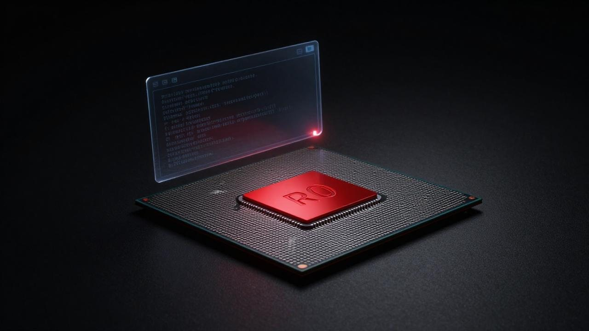
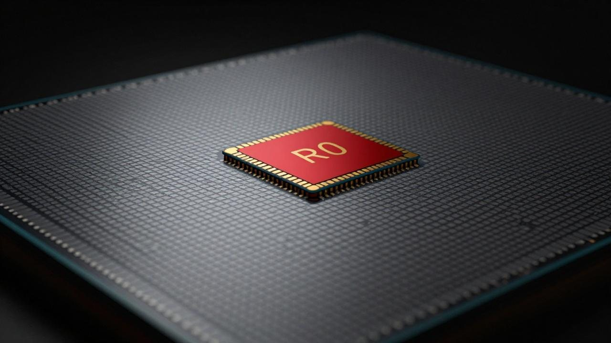
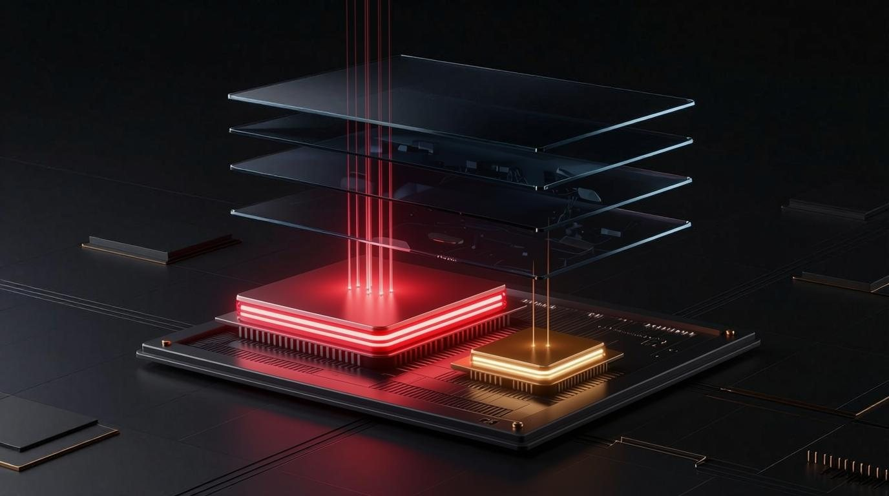
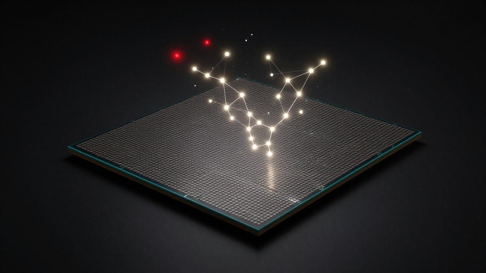

Talk to the machine
Plain text goes to the system agent, which calls typed kernel tools: files, memory, CPU cores, logs, settings, power. Anything that deletes or powers off asks you first.

An operating system where the AI is part of the kernel.
It boots on bare x86-64, with no Linux underneath, and runs two models in ring 0, next to the scheduler and the drivers, on one shared inference engine written in assembly.
A language model (Qwen3.5) is the system agent you talk to at the shell: it answers, reads and writes your files and runs programs through typed kernel tools.
An embedding model (Qwen3-Embedding-0.6B) gives the system a semantic memory: it indexes your notes, your files and your past conversations, so the OS can find things by meaning, not by file name.
The second model is what lets the first one remember. The language model only sees its context window; the embedder searches everything saved on the disk, and the kernel, not the model, decides which few lines go into the context. The memory stays small and on topic, and it survives a reboot.
Both run on the same engine, in the kernel. The question the project asks is what an OS looks like when the models are not apps on top of it, but parts of it.


Plain text goes to the system agent, which calls typed kernel tools: files, memory, CPU cores, logs, settings, power. Anything that deletes or powers off asks you first.

The embedding model indexes every text file you write and every session, in the background while you are
idle, into an index saved on the disk. "what do I need to buy?" finds the shopping list you wrote last week.
/search queries it directly.
Every turn is a snapshot of the model's state: /undo, /redo, /retry,
named branches, save and load. Going back takes about 1.5 ms on the 4B.
Power off and the whole conversation, with its history tree, is written to disk. The next boot picks it up exactly where it was, checked by a state hash.
Facts you tell it ("my name is Anna") and summaries of past sessions are kept on the disk and come back after a reboot.
"how do I hibernate?" is answered from the built-in manual, which the kernel indexes and puts in front
of the question. /man TOPIC searches it directly.
While the model writes a tool call, the kernel only lets through tokens that keep it valid against the tool's schema. In the tests: zero malformed calls.
Each tool call shows how sure the model was; unsure ones that change the machine ask.
python3 (CPython 3.15), sqlite3, jq, Lua, QuickJS, ripgrep, the coreutils and a text editor run from
/bin in a WASI sandbox. MicroPython is built in for one-liners (!py 17*23).
The prompt is read in blocks (about 230 tokens/s on the 2B). Text copied from the conversation is written about 2.5x faster, and tool calls about 1.8x faster, with the same output.
Plain text goes to the agent; the kernel prints each tool call and its result.
ringzero[main]> count the lines of /demo/stats.py with wc
[tool] run_wasm(path=wc, args=-l /demo/stats.py)
[tool] -> 24 /demo/stats.py
[exit 0]A tool call on the 4B q4: the grammar drafts the parts of the call that leave no choice, the speculative pass checks them in one batch, and the kernel scores how sure the model was before running it:
ringzero[main]> create the file /notes/plan.md containing # plan
[grammar] on: 41 tok, 0 masked (0 forced) -> valid call
[decode] 42 tok in 1246.47 ms (32.89 tok/s) spec 28/30 accepted (93%), grammar 27/28
[tool] write_file(path=/notes/plan.md, content=# plan)
[confidence] min margin 0.99 at 'tool name' ('write' vs 'run') -> run
[tool] -> wrote 6 bytes to /notes/plan.mdPick one at build time with MODEL and QUANT. All of them run on the same engine, with
Qwen3-Embedding-0.6B next to them for memory.
| Option | Good for | Guest RAM | Speed (tokens/s) |
|---|---|---|---|
MODEL=4b QUANT=q4 | recommended: best tool use per GB | 8 GB | about 20 |
MODEL=4b QUANT=q8 | best quality | 8 GB | about 14 |
MODEL=2b (default) | fastest, smaller machines | 6 GB | about 34 |
Needs an x86-64 CPU with AVX2, FMA and F16C (most desktop and laptop CPUs since 2015). How the recommendation was measured: docs/MODEL_CHOICE.md.
A small Rust no_std kernel booted by Limine, with the inference engine written in assembly
(llm.asm by alesha-pro, extended for Qwen3.5) linked in as
objects. Drivers: virtio-blk, FAT32, serial, PS/2, framebuffer.
You need a Linux machine with KVM and about 16 GB of RAM. The full list of build tools is in INFO.md.
make model MODEL=4b QUANT=q4 # download and convert Qwen3.5-4B + the embedder
make iso MODEL=4b QUANT=q4 # build the bootable image
make disk # a 512 MiB data disk for your files and memory
make wasm-apps # python3, sqlite3, jq, lua, ... onto the disk
make run-local MODEL=4b QUANT=q4 # boot it in a QEMU windowThen, at the ringzero[main]> prompt:
my name is Anna and my favourite number is 4711
!write /notes/todo.txt buy milk
what do I need to buy?
create a table in /shop.db with sqlite, add three products with prices, and tell me the most expensive
!run python3
/undo
!poweroffBoot again and ask "what is my name?". More examples: docs/DEMOS.md.
Prebuilt images are coming with the beta. Until then, build from source: the repository. Beta notes: docs/BETA.md.
Experimental. It runs in QEMU/KVM with virtio devices; real hardware is on the roadmap. Expect rough edges.
Code from other projects: the inference engine, thread-pool dispatch and weight exporter from
llm.asm (MIT),
MicroPython (MIT),
wasmi (MIT / Apache-2.0) and the
Limine bootloader (BSD-2-Clause). The programs in
/bin are fetched or built by make wasm-apps, and the models (Qwen3.5-2B, Qwen3.5-4B and
Qwen3-Embedding-0.6B by the Qwen team, Apache-2.0) are downloaded by make model; neither is shipped
in the repo.
The full list, with versions and licenses: README credits and INFO.md.
GPL-2.0-or-later. The vendored engine is MIT. Models are Apache-2.0 and are downloaded, not shipped.